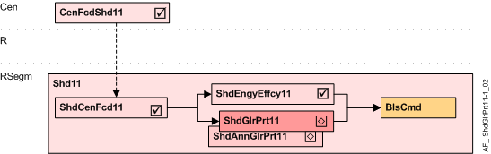

Shading anti-glare protection (ShdGlrPrt11)
Overview
The application function "Shading anti-glare protection 11" (ShdGlrPrt11) contains the glare protection functionality.
Note: Per default Glare Protection is active when the room is occupied (Configuration in RShdCoo11)

Cen | Central functions |
CenFcdShd11 | Central facade shading for automatic 11 |
R | Room |
RSegm | Room segment |
ShdCenFcd11 | Shading central facade function 11, for automatic |
ShdEngyEffcy11 | Shading energy efficiency 11, thermal protection |
ShdGlrPrt11 | Shading anti-glare protection 11 |
ShdAnnGlrPrt11 | Annual shading anti-glare protection 11 |
BlsCmd | Blinds command |
Function
The AF calculates the required glare protection position, and prepares the necessary blinds commands.
For correct operation, this AF requires the existence of AF ShdCenFcd11 with a brightness sensor.
The glare protection position is based on:
- the brightness on the façade, calculated in the central facade function (AF CenFcdShd11) as a multistate value GlrPrt (None, Hold, High, Dark) and
- the glare protection mode (GlrPrtMod) configured to the needs of the room and the user.
The Anti-glare protection mode (GlrPrtMod) defines the blinds position based on the glare protection condition (None, Hold, High).
Configured Anti-glare protection mode | Blinds position for glare protection condition (from AF CenFcdShd11) | |||
|---|---|---|---|---|
No | Name | None | Hold | High |
1 | Down / Open / Up | Move up | Open slats | Move down |
2 | Sun tracking / Open / Up | Move up | Open Slats | Move to sun tracking position |
3 | Down / No operation / Up | Move up | No movement | Move down |
4 | Sun tracking / No operation / Up | Move up | No movement | Move to sun tracking position |
5 | Down / No operation / No operation | No movement | No movement | Move down |
6 | Sun tracking / No operation / No operation | No movement | No movement | Move to sun tracking position |
- Criteria for "High"(glare protection required):
"Sun tracking" is used to allow maximum daylight even during glare protection.
"Move down" is used instead of "Sun tracking", when - no sun tracking is possible due to the design of the façade product
- sun tracking does not cover all places in the room correctly or
- the user does not want sun tracking (frequent movements)
- Criteria for "Hold" (Change from glare to no-glare for a short duration):
"Open slats" is used only for venetian blinds. Slats are opened for "Hold". This allows maximum daylight, but results in some short movements.
"No operation" is used for awnings or when the user prefers to avoid movements. - Criteria for "None" (Change from glare to no-glare for a long duration):
"Move up" is used to get maximum daylight, but results in some movements.
"No operation" is used to avoid any movement. The blinds or awnings have to be opened manually or via time scheduler.
Configuration
 Parameters
Parameters
Description | Parameter | Default value |
|---|---|---|
Anti-glare protection mode 1:Down / Open / Up | GlrPrtMod | 2:Sun tracking / Open / Up |
Interface
None.
Engineering and commissioning
- The sun tracking function and brightness thresholds are configured in AF CenFcdShd11.
- For correct operation, the AF requires the existence of AF ShdCenFcd11 with a brightness sensor.
Troubleshooting
Verify the function of the chart in CFC: All values evaluated can be seen on the chart outputs.